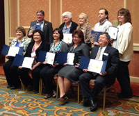

Advocacy Outreach received the Gold Award at the state level for its English as a Second Language classes.
February 2013
AO's daytime family-literacy program and evening ESL classes were honored for students' achievements in speaking, reading and writing English. Advocacy Outreach's programs are funded by a federal English Literacy- Civics Education grant through the Workforce Investment Act (WIA). Funding also comes from the Barbara Bush Foundation for Family Literacy. Students also participate in community-service events, parenting classes and parent-child activities. February 2013.